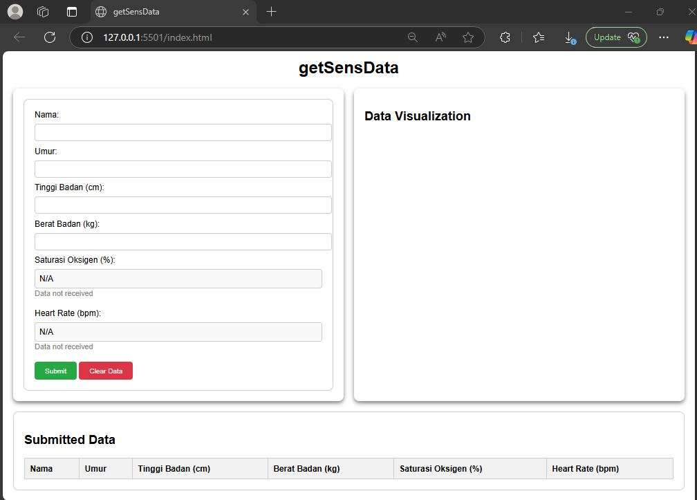

getSensData

getSensData is a web application designed to real time collect data from sensors, display, and visualize medical data such as oxygen saturation and heart rate. The application uses a form to gather user information and displays the data in real-time using Chart.js. The backend is built with Node.js and Express, and it stores data in a MongoDB database.
This project features user data collection by capturing information such as name, age, height, and weight, while also integrating real-time sensor data to display oxygen saturation and heart rate. It includes data visualization using bar charts for better insights, along with data management functions that allow users to submit and clear entries. Additionally, it supports serial port communication to receive data from an Arduino, enabling seamless interaction between hardware and software.
Explore the code:
Github Back to Projects